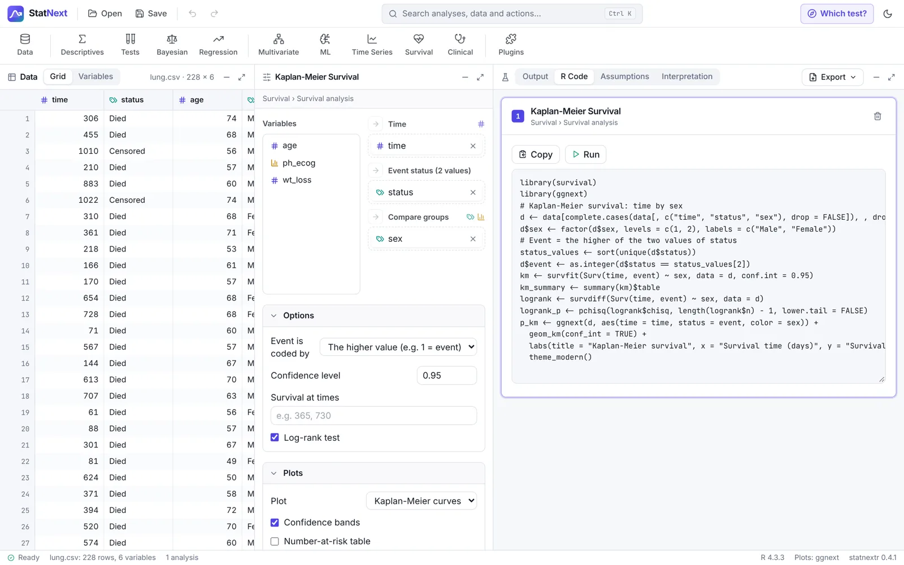
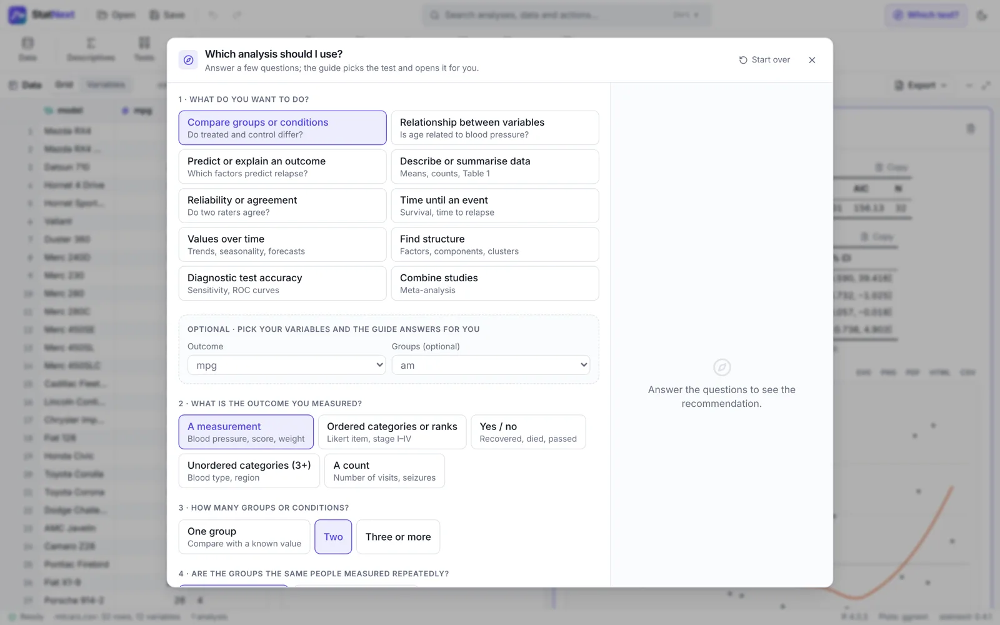

User guide
Everything you need to go from installing StatNext to a finished report. Current version: latest.
Install
- Install R 4.4 or later from cloud.r-project.org. StatNext uses your own R to compute every result. If R is missing, StatNext's setup screen links to the right download for your computer.
- Download StatNext for your system from the download section.
- Install it.
- Windows: double-click the
setup.exe. If SmartScreen says “Windows protected your PC”, click More info › Run anyway (the installer is not code-signed yet). StatNext then appears in the Start menu. - macOS: open the
.dmgand drag StatNext into Applications. The app is not notarized yet, so the first time it is blocked: open System Settings › Privacy & Security, scroll down and click Open Anyway. - Linux: make the AppImage executable (
chmod +x StatNext_*.AppImage) and run it, or install the.debwithsudo apt install ./StatNext_*.deb.
- Windows: double-click the
First launch
StatNext looks for R automatically (on Windows from the registry or Program Files\R). It then installs the R packages it needs into its own private library, so your personal R library is never touched. This takes 3 to 10 minutes and needs an internet connection; later launches start in seconds.
Packages come from a date-pinned snapshot, so everybody using the same StatNext version gets the same package versions and the same results.
The workspace

| Area | What it does |
|---|---|
| Toolbar | Open, Save, Undo, Redo, search (Ctrl/⌘ K) and the Which test? guide. |
| Ribbon | Analysis menus: Data, Descriptives, Tests, Bayesian, Regression, Multivariate, ML, Time Series, Survival, Clinical, Plugins. |
| Data pane | Spreadsheet Grid and Variables view (labels, measure level, value labels, missing codes). |
| Analysis pane | Variable list, role boxes and the options for the chosen analysis. |
| Output pane | Results as numbered cards, with tabs for Output, R Code, Assumptions and Interpretation, and the Export menu. |
| Status bar | R version, plot engine, package status and progress. |
Drag the dividers to resize panes; use the – and ⤢ buttons in a pane header to minimize or maximize it. The moon icon switches between light and dark themes.
Open and prepare data
Click Open (Ctrl/⌘ O) to load CSV/TSV, Excel, SPSS (.sav), Stata, SAS or Parquet. New to StatNext? The start page has 28 example datasets and one-click worked examples.
Variables
In the Variables tab set each variable's label, measure (nominal, ordinal, scale), value labels and missing-value codes. The measure decides which role boxes a variable can go into.
Compute, recode, filter
The Data menu creates new variables from formulas, recodes values into groups and filters rows. Every change can be undone with Ctrl/⌘ Z and appears in the R code.
Run an analysis
- Pick an analysis from the ribbon, or search for it with Ctrl/⌘ K.
- Drag variables from the list into the role boxes (for example Dependent variables and Grouping variable), or double-click a variable to send it to the next free box.
- Set options in the sections below: tests, effect sizes, assumption checks, plots.
Results update as you change options. Press Ctrl/⌘ . to cancel a long run.

Read the results
- Plain-language summary at the top of each test and model, written by easystats
report()on your computer. Turn it off in Settings if you prefer. - APA-style tables with effect sizes and confidence intervals. Use Copy on any table to paste it into Word or Excel.
- Assumptions tab: normality, equal variances and other checks with a short verdict.
- Plots open as static images; click Interactive for zoom and hover. Save any plot as SVG, PNG or PDF. Plots are drawn with ggnext; if ggnext can't draw a plot, StatNext uses ggplot2 and marks it “ggplot2 fallback”.
R code
The R Code tab of each result shows the exact script that produced it. You can edit it and press Ctrl/⌘ Enter to run it again. The code is plain R that runs in RStudio or any R console with the same data.

Export and save
- Export (Output pane) saves all results as Word (
.docx), PDF or HTML. - Export the whole session's code as
.R, R Markdown (.Rmd) or Quarto (.qmd). - Save (Ctrl/⌘ S) writes a
.statnextproject: your data, variable settings and analyses in one file you can reopen or share.
Which test should I use?
Click Which test? in the toolbar. Answer a few plain questions about your goal and your variables, or pick the variables and let StatNext work it out. The guide recommends an analysis, lists alternatives (including a Bayesian option) and opens it ready to run.

AI assistant (optional)
The assistant is off by default and StatNext works fully without it.
- Click the Settings icon (sliders, top right) and choose a provider: Anthropic Claude, OpenAI, Google Gemini, any OpenAI-compatible server, or Ollama running on your own computer.
- Paste your API key. It is stored in your system keychain, not in a file.
- Click Ask AI in the toolbar, or Explain on any result.
What is sent: result tables, summaries and your question. Your data rows are never sent. Each attachment is shown before you send it, so you can remove anything. AI can be wrong, so check its answers against the results.
Plugins
Each analysis in StatNext is a folder with a spec.json (options and layout), an R file (the code it generates) and a help.md. You can add your own the same way: Plugins › Manage plugins installs a plugin from a folder or .zip, and Create a starter plugin writes a working example to copy.
Keyboard shortcuts
| Action | Windows / Linux | macOS |
|---|---|---|
| Search analyses and actions | Ctrl K | ⌘ K |
| Open data | Ctrl O | ⌘ O |
| Save project | Ctrl S | ⌘ S |
| Undo / redo | Ctrl Z / Ctrl Y | ⌘ Z / ⇧ ⌘ Z |
| Run selected analysis | Ctrl Enter | ⌘ Enter |
| Cancel a running analysis | Ctrl . | ⌘ . |
Troubleshooting
“R not found”
Install R 4.4 or later from cloud.r-project.org, then restart StatNext. The setup screen has a Download R button for your system and a retry button.
Package installation fails or is slow
The first launch needs internet. Behind a company proxy or firewall, try a home network once; the packages stay installed afterwards. The status bar shows how many R packages are missing.
macOS says the app “is damaged” or “can't be opened”
This is Gatekeeper blocking an app that is not notarized. Use System Settings › Privacy & Security › Open Anyway. If that button doesn't appear, right-click StatNext in Applications and choose Open.
Still stuck?
Open an issue on GitHub with your operating system, R version (shown in the status bar) and what you clicked.
Cite StatNext
If StatNext helped your research, please cite it. GitHub's Cite this repository button on the repository page gives APA and BibTeX. Each release is archived on Zenodo with its own DOI.
Divakaran, M., Sreedharan, J., R S, R., Podhuval, R., Thekkedath, R., & V P, P. (2026). StatNext: point-and-click statistics with reproducible R code
(Version latest) [Computer software]. https://github.com/itsmdivakaran/statz
Credits
Authors: Mahesh Divakaran (ORCID), Prof. Dr. Jayadevan Sreedharan (ORCID), Dr. Rasin R S (ORCID), Rakesh Podhuval, Dr. Rahul Thekkedath (ORCID), Prasanth V P (ORCID)
Please also cite R and the R packages behind the analyses you used; the R code of each result lists them.